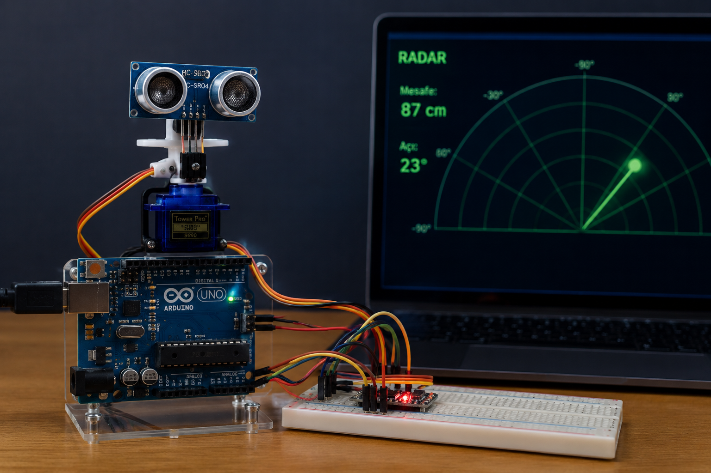

📸 Proje Galerisi
Genel Görünüm
Arduino Servo Radar sisteminin genel görünümü.

HC-SR04 Sensörü
Mesafe ölçümünde kullanılan ultrasonik sensör.

SG90 Servo Motor
Tarama hareketini gerçekleştiren servo motor.
HC-SR04 ultrasonik sensör ve SG90 servo motor kullanılarak geliştirilen gerçek zamanlı radar simülasyon sistemi.

Arduino Servo Radar projesi, çevrede bulunan nesnelerin konumunu ve uzaklığını gerçek zamanlı olarak belirlemek amacıyla Arduino Uno kullanılarak geliştirilmiştir.
Sistemde kullanılan HC-SR04 ultrasonik sensör, belirli aralıklarla mesafe ölçümü gerçekleştirirken SG90 servo motor sensörü 0° ile 180° arasında hareket ettirerek çevreyi taramaktadır.
Elde edilen tüm veriler seri haberleşme üzerinden bilgisayara aktarılır ve Processing yazılımı kullanılarak radar ekranı şeklinde görselleştirilir.
Bu proje; gömülü sistemler, sensör teknolojileri, servo motor kontrolü, seri haberleşme ve gerçek zamanlı veri görselleştirme konularında uygulamalı deneyim kazanmak amacıyla geliştirilmiştir.
Ana kontrol kartı
Ultrasonik mesafe sensörü
180° servo motor
Devre kurulumu
Bağlantılar
Radar arayüzü
Servo motor sürekli olarak belirlenen açı aralığında hareket eder. Her açı değişiminde HC-SR04 sensörü yeni bir mesafe ölçümü gerçekleştirir.
Ölçülen mesafe bilgisi Arduino tarafından işlenir ve seri port üzerinden bilgisayara aktarılır.
Processing yazılımı gelen verileri gerçek zamanlı olarak okuyarak klasik radar ekranına benzer bir görselleştirme oluşturur. Böylece algılanan nesnelerin hem açısı hem de uzaklığı anlık olarak görüntülenebilir.
Arduino Servo Radar sisteminin genel görünümü.
Mesafe ölçümünde kullanılan ultrasonik sensör.
Tarama hareketini gerçekleştiren servo motor.
| Platform | Arduino Uno |
| Sensör | HC-SR04 |
| Servo Motor | SG90 |
| Dil | Arduino C++ |
| Arayüz | Processing |
| Haberleşme | UART (Serial) |
Tamamlandı
Geliştirme
Platform
Radar Arayüzü
Bu projeye ait Arduino kodları, Processing arayüzü, devre şeması ve bağlantı diyagramı çok yakında bu sayfada paylaşılacaktır.
Arduino Servo Radar projesi, gömülü sistemler alanında gerçekleştirdiğim uygulamalardan biridir. HC-SR04 ultrasonik sensör ile gerçek zamanlı mesafe ölçümü yapılmış, SG90 servo motor sayesinde çevresel tarama gerçekleştirilmiş ve elde edilen veriler Processing kullanılarak radar ekranında görselleştirilmiştir.
Bu çalışma sayesinde sensör teknolojileri, servo motor kontrolü, seri haberleşme, gerçek zamanlı veri işleme ve Arduino programlama konularında uygulamalı deneyim kazanılmıştır.